ЛОГОТИПЫ / ФИРМЕННЫЙ СТИЛЬ
ЛАРА
Логотип и фирменный стиль футбольной академии «ЛАРА». Форма, тренировочная одежда и аксессуары объединены в единую визуальную систему.
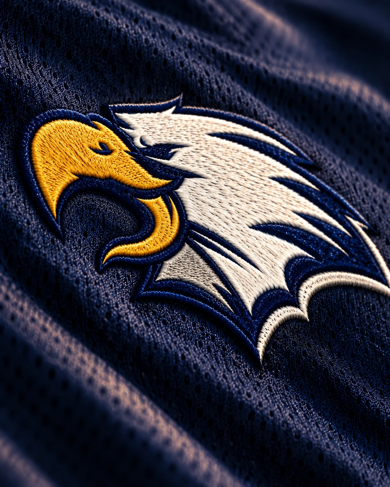
Логотип
В основе эмблемы — орёл и футбольный мяч. Разработаны два варианта: полная эмблема с названием академии и отдельный знак для одежды и аксессуаров.
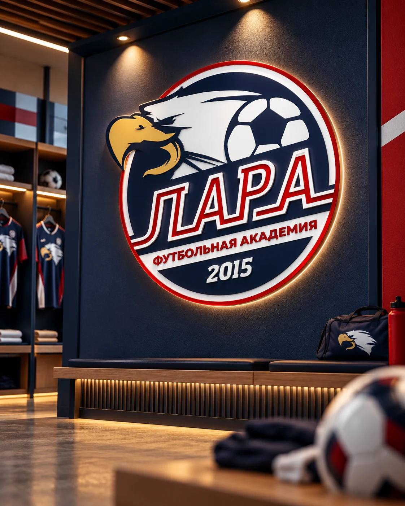
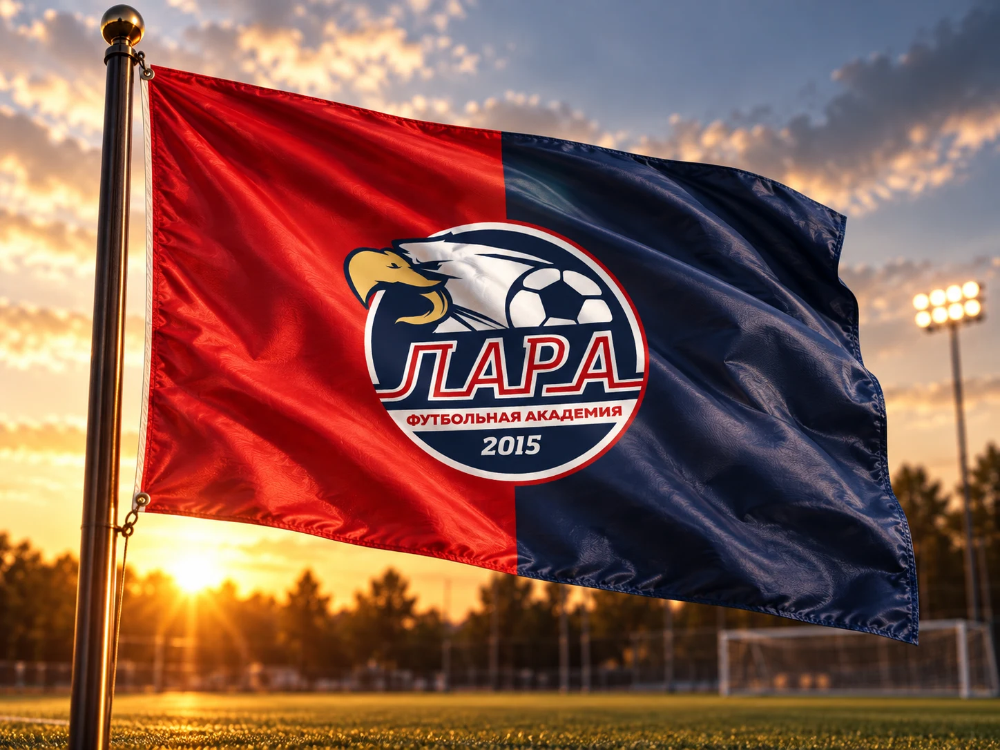
Форма
Графика построена на сочетании тёмно-синего, красного и белого. Контрастные линии подчёркивают крой и связывают игровую форму с тренировочной экипировкой.
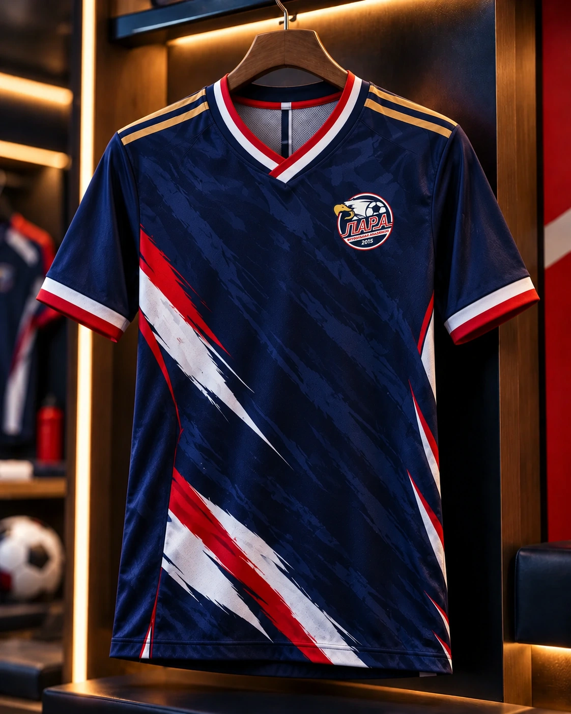
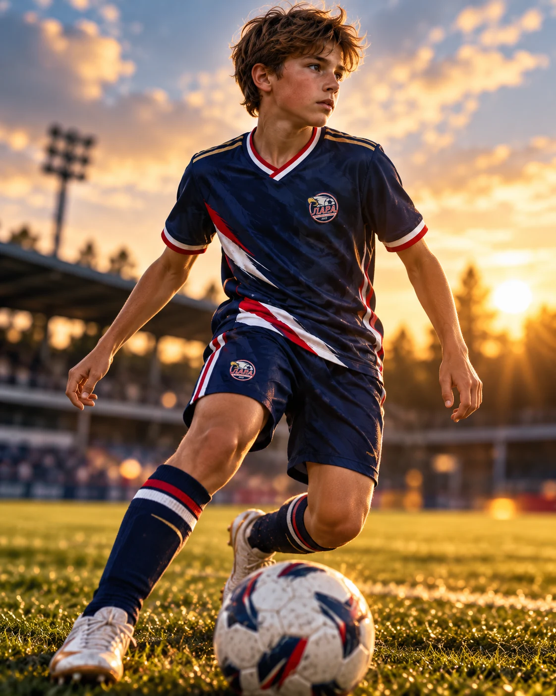
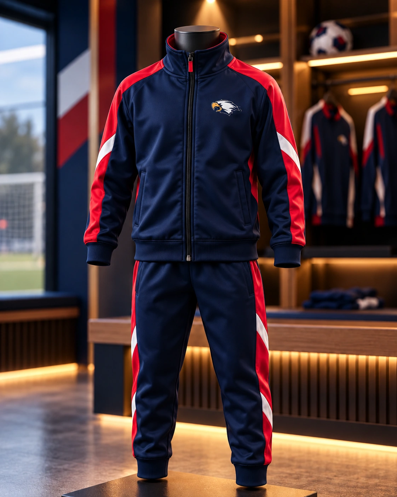
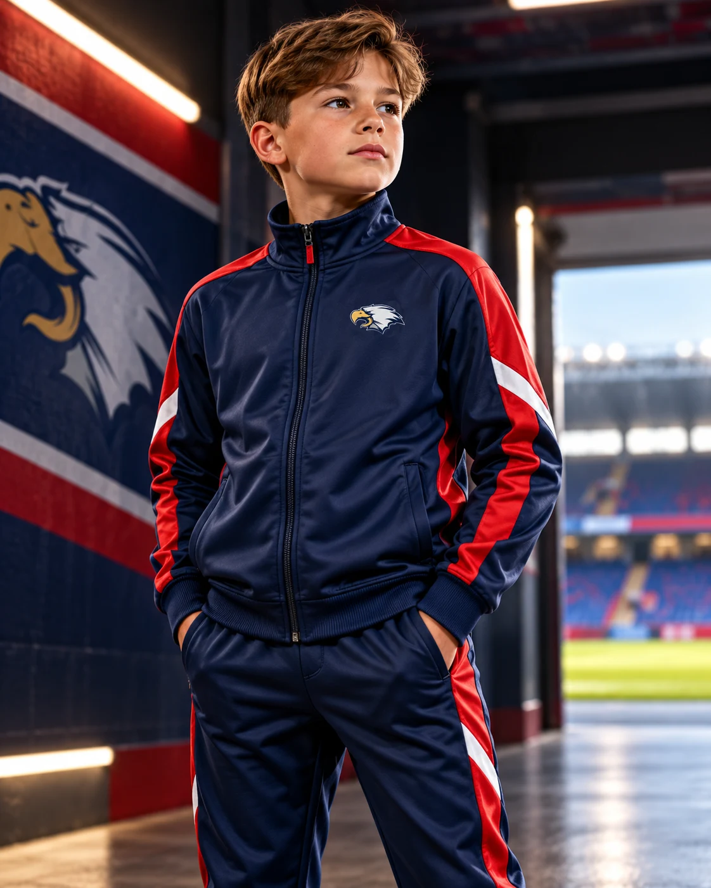
Атрибутика
Айдентика адаптирована для сумок, рюкзаков, кепок, флага и сувениров. Масштаб и расположение знака подобраны для каждого носителя.
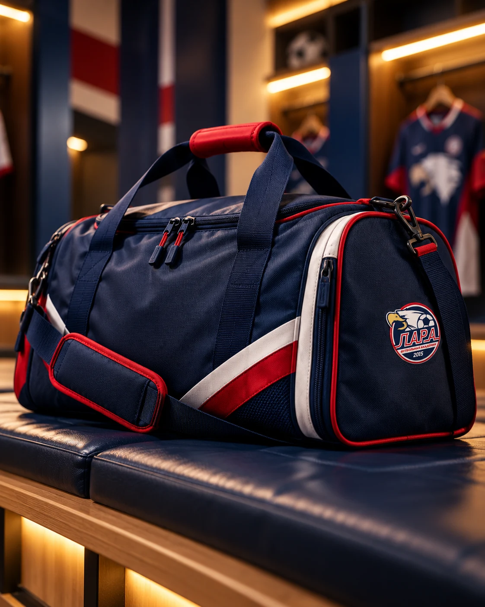
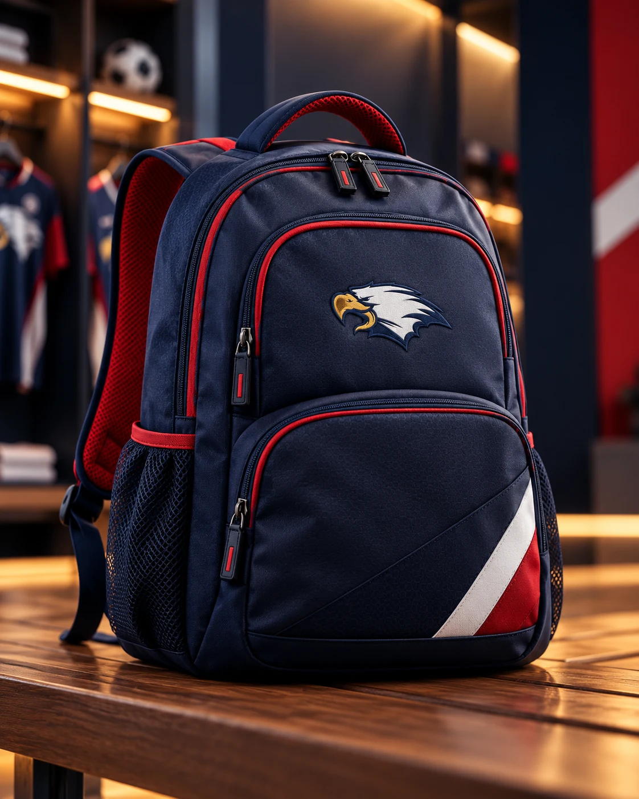
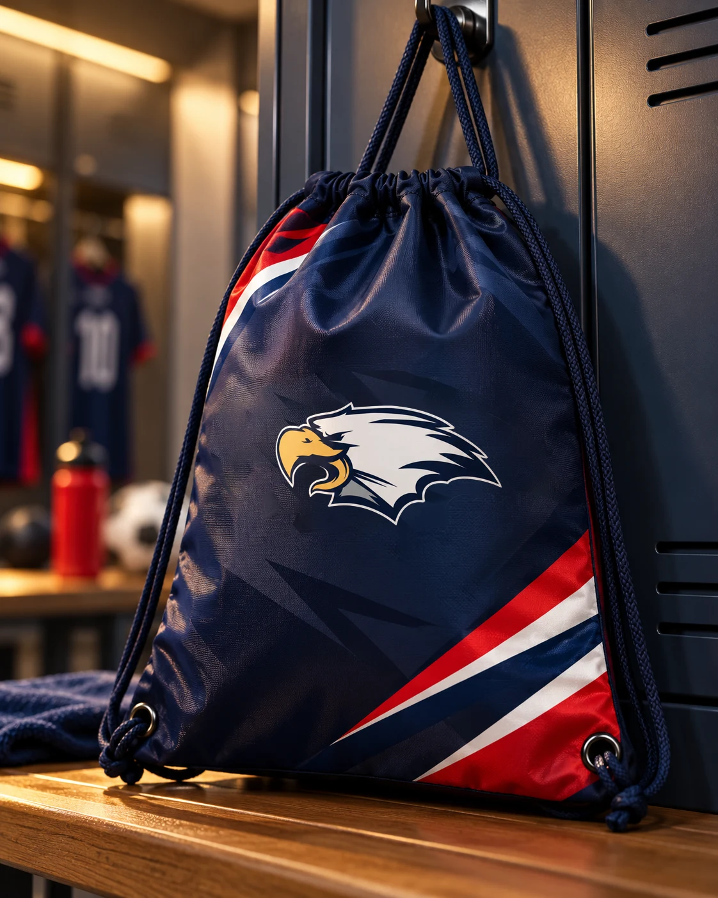
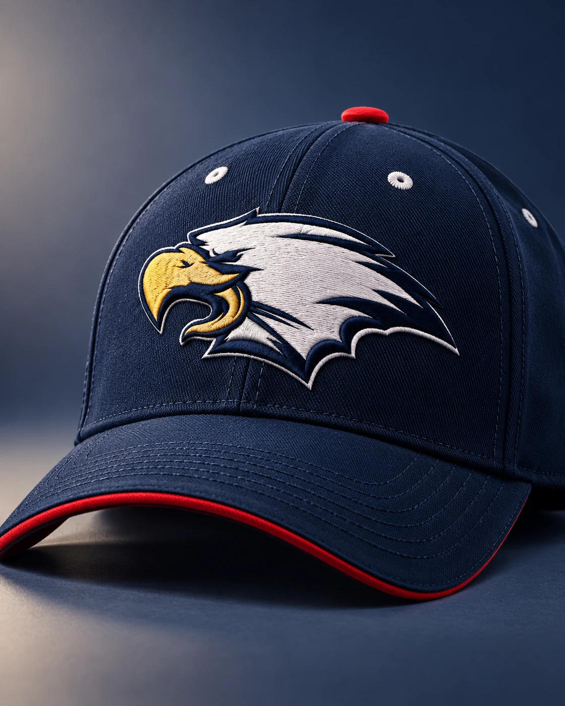
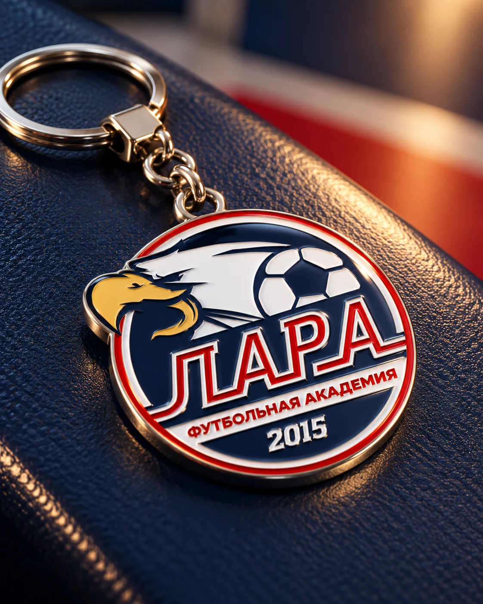
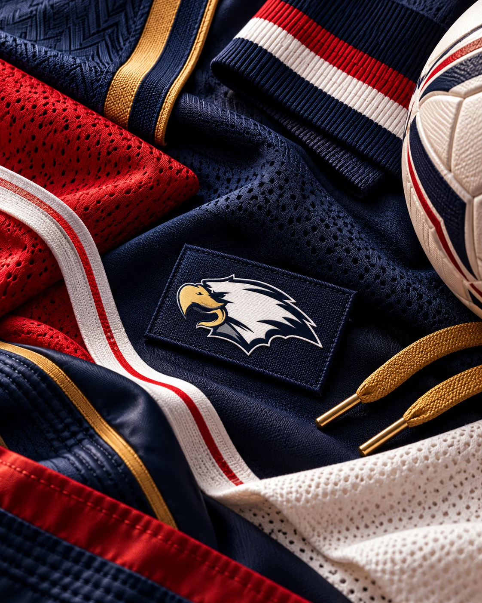